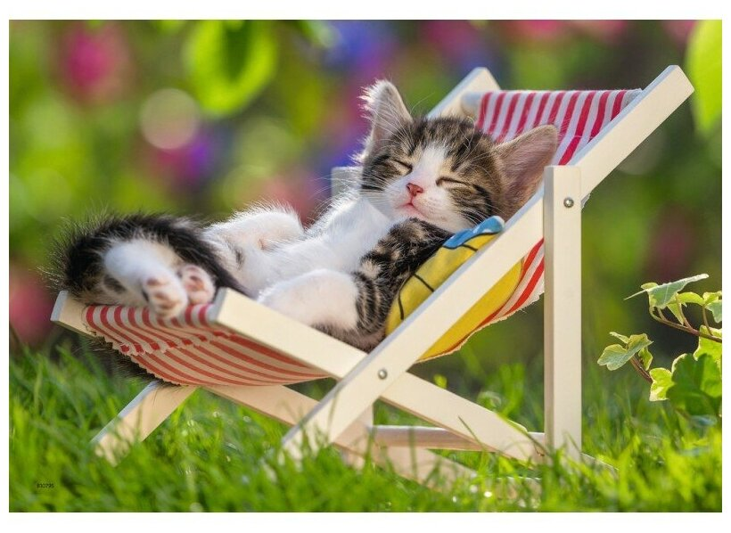

Почему отдых — это важно?
Отдых — одна из основных потребностей человека, такая же как сон или употребление пищи. Если человек совсем не отдыхает, не переключается с рутинных дел, а всё время занимается учёбой, работой или тренировками, рано или поздно наступает выгорание, повышается шанс развития болезней. Это происходит, потому что организм перенапрягается. Без отдыха человек никак не может отпустить это напряжение, живёт на пределе, и организм начинает давать сбои.
Человеку нужен как регулярный ежедневный отдых — в виде смены деятельности и фокуса внимания, так и продолжительный — отпуск или каникулы, чтобы перезагрузиться, отвлечься, набраться сил и энергии.
Что будет, если не отдыхать?
Отдых — важная часть работы, без него организм истощается эмоционально и физически, мы становимся менее продуктивными, грустными и уставшими. Поэтому важно давать себе отдохнуть от работы. Но не менее важно — отдыхать правильно.

Для организма нет понятия «отпуск» или его отсутствия. Зато наши тела прекрасно понимают, что такое чрезмерная нагрузка, которая обычно выражается в переработках. Основным последствием хронического перерабатывания и отсутствия отдыха является стресс. Физиологически стресс в организме запускает вырабатывание кортизола, гормона, который оказывает влияние на многие системы организма.

Депрессивные и тревожные расстройства, расстройства пищевого поведения, высокие риски суицида, а также аддиктивные расстройства, то есть пристрастия к алкоголю и другим психоактивным веществам, чаще встречаются у людей, которые перерабатывают, чем среди тех, кто соблюдает режим труда и отдыха. Таким образом, переработки и регулярное пренебрежение периодическими отпусками может существенно сказываться на качестве и продолжительности жизни человека.
Важность летнго отдыха: советы психологов
Однако не каждый понимает, как важен летний отдых для здоровья и общего благополучия. Перерыв в работе помогает не только расслабиться и подзарядиться энергией, но и развить свои интересы, повысить уровень физической активности и улучшить настроение. Давайте рассмотрим основные причины, по которым летний отдых является неотъемлемой частью здорового образа жизни и как он влияет на наше эмоциональное и психическое состояние?
Больше об отдыхе смотрите на сайте.